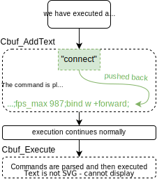
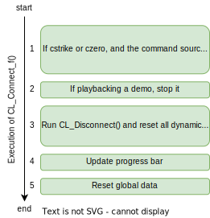
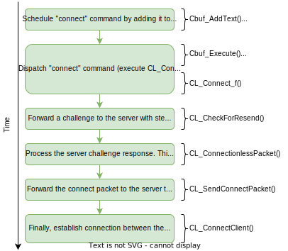

In this article I'd like to discuss the good old GS engine and the way it handles communication between client and server when acquiring connection. This will be a loong dive but, also a very interesting one. So stay till the end if you can! :)
First things first
So, first let's discuss how do you actually connect to a server? Well, there are two options only. Either through the console or through the Server Browser. In both of these ways a "connect" command is scheduled and later executed.
To be more precise, to schedule a regular console command, the Cbuf_AddText() function can be used. This function takes the input command and places it together with other commands. The command queue is basically a big continuous array of characters containing all scheduled commands/cvars to be later executed. At this point, no commands are processed in any way. Parsing and the overall processing of each command is done at dispatch, i.e. at execution.
So throughout the frame, commands are added to the list and at some point in the time, all commands in the queue are executed at once.
All commands have a callback routine associated to it. For example the "connect" cmd has the CL_Connect_f() function. Inside Cmd_ExecuteStringWithPrivilegeCheck() (called by Cbuf_Execute()) all commands are executed and thus also their callback routine is called.
// Inside Cmd_ExecuteStringWithPrivilegeCheck():
...
cmd->function(); // Dispatch callback function associated with this command
When the "connect" command is processed, the callback routine associated to this command is called, i.e. CL_Connect_f(). So at this point, we're inside CL_Connect_f(). Let's now discuss what is happening there.
Inside CL_Connect_f()
The generic description of this function would be that it "Prepares global data for connection to a server". From the description we can tell that it will clearly reset/re-initialize some global data associated with connecting to a server, so that a new connection can start right away.
Part of its execution is a call to CL_Disconnect(). This function also resets more global data, but also dynamic data such as stopping all sounds, deallocating entities, clearing event queues, decals, resources, etc. Apart from resetting more data, but only if already connected to a server, it informs the remote server about our disconnect and terminates the connection between us and the steam game server.
To sum it up, let's divide CL_Connect_f into 5 parts.
So now, let's discuss these individual steps.
1. CS and CZERO
If we're playing Counter-Strike or CS:Condition Zero, some servers may abuse the connect command. Server can use a SVC to forward commands to clients using the "svc_stufftext" SVC. If a "connect" command is send by the server, inside CL_Connect_f() we register that and exit execution with following error in the console.
if ((g_bIsCStrike || g_bIsCZero) && cmd_source != src_command)
{
Con_Printf("Connect only works from the console.\n");
return;
}
However, if playing Half-Life, TFC, or other, this won't happen.
2. Stopping a demo playback
This step is straightforward. If we're watching a demo playback, stop it.
3. CL_Disconnect()
CL_Disconnect() as mentioned before, resets all dynamic & global data + informs the server with our disconnection (if already connected) and terminates the connection between us and the remote.
4. Progress bar
Progress bar is updated so the right message renders in the dialog. If it wasn't rendered already, start rendering the progress bar.
5. Reset global data
First of all, cls.state is updated to ca_connecting. This will inform other functions that are executed after this command is dispatched or next frame, that we want to connect to a server. With it, cls.servername is filled with the ip address of the server we want to connect to. This is again to store this information globally, so that other functions can pick up this when they'll establish the connection later on.
Then other stuff such as the connection time, the amount of connection retries, if the server is VAC-secured, and more are reset as well. All of these will be set during the connection to a server, in other functions, when the connection is established.
After CL_Connect_f()
Now we have executed CL_Connect_f() and so, what now? We said before that inside this function we only setup the connection, but we don't actually start it yet. As stated before, there's two pieces of global data that will be changed by this function. That is, cls.state to ca_connecting and cls.servername to the remote ip address.
By setting this two pieces of global data, functions that are meant to start the connection will now actually start it as soon as they're called. Let's now talk about these functions.
CL_CheckForResend()
Now, when cls.state is set to ca_connecting, this function will actually continue its execution as follows:
void CL_CheckForResend()
{
...
if (cls.state != ca_connecting)
return; // The execution would normally stop here
// when the function is called every frame.
// However, after CL_Connect_f() is called, cls.state is set to ca_connecting.
// Hence, we continue our execution in this function.
...
}
This function, CL_CheckForResend(), sends a challenge to the server about that we want to connect. A challenge is a request or a command send to the server by client. The server processes this request and replies with a response, that we'll then read and process next frame. In this situation, we request a following challenge. This message/data is then transferred via a packet straight to the server.
255255255255getchallenge steam\n
We're basically requesting an authentication via the steam protocol (number 0x3). And by the way, there are three valid authentication protocols:
| Name | Value | Description |
|---|---|---|
| Authentication certificate | 0x01 | Connection from client is using a WON authenticated certificate. |
| Hashed key | 0x02 | Connection from client is using hashed CD key because WON comm. channel was unreachable. |
| Steam | 0x03 | Steam certificates. |
I don't know the challenge syntax for the WON protocol. Nonetheless, on the newest steam build, we tell the server that we want to authenticate via the steam protocol.
After challenge request
So after the challenge has been forwarded to the server, we wait till the next frame, where we'll get the response. Actually at this point, we'll finally start reading messages (packets) from the server inside CL_ReadPackets(). Up till this point, we weren't reading anything, because we weren't connected to any server. But after we've contacted the server with our challenge, the server must respond. This is where all packets received from the server are fetched every frame:
void CL_ReadPackets()
{
// ...code
while (CL_GetMessage()) // Fetch all incomming packets from the remote.
{
// Process all messages we get from the server.
// This also includes parsing SVCs (SerVer Commands) after the connection is established.
}
// ...code
}
So now, after we've forwarded a challenge to the server, the server replied to us with a response. This response will be caught inside this while loop. But first, let's now talk about the "connectionless packet" concept.
The "connectionless packet"
This is the packet with our challenge response from the server (it can also contain other messages than just our challenge). How do we know if we fetched a connectionless packet or a data packet containing e.g. SVCs to parse? It's pretty straightforward! If we fetch a connectionless packet, the first four bytes (an integer) of the raw packet data will be -1 (or 0xFFFFFFFF). This is called a "Connectionless header". This header indicates the presence of incomming connectionless packet. The code to check if we got such packet is following:
// Inside the fetching while loop
// Check if the first four bytes of raw packet data is the connectionless header.
if (*(int*)net_message.data == CONNECTIONLESS_HEADER) // -1
{
CL_ConnectionlessPacket(); // Process it
continue; // Go to next packet
}
CL_ConnectionlessPacket()
As stated before, this function is responsible for processing messages we got from the remote server, if the connectionless packet occurs. One of which is our challenge response which we'll talk about now.
This message is a one continuous stream of characters. Where the first character of the stream represents the message id in a character form. So for example, our challenge message id is the letter "A". What follows is the raw data, specific for every message id. With that in mind, we should now understand the following challenge response we get from the server:
"A00000000 1046947320 3 1 0"
^ ^ ^ ^ ^
| | | | 0 or 1 if the server is VAC secured
| | | steam game server ID
| | authentication protocol (WON, CD hash, or steam)
| challenge value
message id
Pretty simple. Now, from this message we parse out all tokens and save the valid information. Every message the server sends to us must follow some specific format, otherwise the whole system would crash on inconsistencies made by reading invalid data. This is predefined by the protocol, which AFAIK, wasn't published anywhere by Valve, apart inside the code.
So just to recap, the whole point of this was that we sent a challenge (or a request) to the server after the "connect" cmd was executed. The server replied with this information. We processed this information, and now we establish the connection with the server using the correct authentication protocol. In our case the steam auth prot.
Now, after we've gathered all this information from the challenge response, it's time to send the connect packet and initialize the connection with the server. This will still be done after dispatching the challenge response inside CL_SendConnectPacket().
Sending the connect packet
We are inside CL_SendConnectPacket(). Here, we send our connect response to the server after fetching the challenge. In there, we decide on which protocol authentication we'll be using, and we forward appropriate data to the server. The packet data we're forwarding to the server via a packet will have following format:
// Format of the connect packet:
1.-4.connect 5. 6. \"7.\" \"8.\"\n"
// Where:
// 1.-4. is always 255
// 5. protocol version (i.e. 48 on the newest build)
// 6. challenge value
// 7. raw protocol information/data
// 8. userinfo string
Everything is pretty straightforward. But, about the raw protocol information/data, this depends on the authentication protocol we're using. For example, when using the steam auth protocol, this dat has a "steam" token in it. Else when using CD hash, the data has a CD hash string in it, etc. We can actually see it here:
// The protocol raw data example
\prot\3\unique\-1\raw\steam\cdkey\4e578ba3782d57001382dc956539de0b
^
the steam token we've talked about
This info string has following syntax: "keyname"\"value". And thus it can be divided into:
// KEY NAME VALUE
// prot - auth protocol value, i.e. for steam it is 3
// unique - always -1
// raw - raw auth protocol data
// cdkey - hashed CD key
Now this is the protocol information. However, the packet contains even more information. For example the protocol version, the challenge value and the raw userinfo string. Together with the protocol information it composes the final data transferred to the server via a packet. An example of such packet data that will be sent to the server can be seen here:
ÿÿÿÿconnect 48 1046947320 "\prot\3\unique\-1\raw\steam\cdkey\4e578ba3782d57001382dc956539de0b" "\hud_classautokill\1\cl_dlmax\512\cl_lc\1\cl_lw\1\cl_updaterate\60\bottomcolor\6\topcolor\30\model\gordon\name\Player\rate\20000"
// The formatting of this packet is shown above.
This data is then forwarded to NET_SendPacket() and to the server.
Almost final steps
After we've parsed the first connectionless packet, there's another one right after. In the first one we basically got the challenge response and sent the connect packet to the server, and the in the second one we receive a kind of "notification" from the server that we're approved to finally connect to the server. (the second connectionless packet is still happening before the server processed our connect packet)
So now we're again inside CL_ConnectionlessPacket() however, now with different message id. Remember, the first msg id was the challenge response. But now, we got the letter "B" message id, which states for "connection approval".
Upon dispatching this message id, we call yet another (now last) function - CL_ConnectClient().
CL_ConnectClient(), the final step
If you've come this far, you got my respect! Because understanding all of this is pretty hard, I know. So don't worry if you don't understand everything! :)
Spoilers, inside this function we finally mark us as "connected" by setting cls.state = ca_connected. But before that, I'd like to also discuss what this function does and what is its purpose.
So actually, dispatching the "connection approval" connectionless message id also comes with parsing out the parameters we got along with this packet from the server. An example of such packet data could be:
B 165 "158.XXX.50.XX:27005" 0 8156
^ ^ ^ ^ ^
| | | | server build number
| | | always zero (unknown)
| | "true" ip address
| user id
message id
This is the information we get along with the packet. This data is again saved globally for later use. After we parse all of the information, we setup netchan connection, which allows us to receive SVC packets from the server next frame.
After that, a message is printed to the console, informing us about the successful connection, together with following:
...
// The message
Con_Printf("Connection accepted by %s\n", addr);
cls.state = ca_connected // Now we're connected!
...
Then we setup some more global data such as the connection timestamp etc. And that is it! Now we'll start to receive SVC packets with actual data such as entity data, resources, and more.
Conclusion
Let's now sum up the steps we had to overcome in order to successfully connect to a remote server:
These steps weren't taken in one frame however, in several (few) frames. The communication between client and server is not instant, but rather per time. One frame client requests a challenge and the other frame server processes this challenge request and sends an response, and after that client processes this response.
After the final step, i.e. setuping the netchan + setting cls.state to ca_connected, we can finally receive SVC packets from the server. From now on, data is constantly flushed by the server onto client every frame until we render world, entities, and all other kinds of stuff and we can play on the connected server.
More information
Now, this article was only about "establishing" the connection with us and the server. After this is done, as mentioned before, actual data is being read. This is where it gets interesting, as we slowly process all resources, entities, custom data, render the world etc.
Maybe in the future I'll write about what happens next. :)